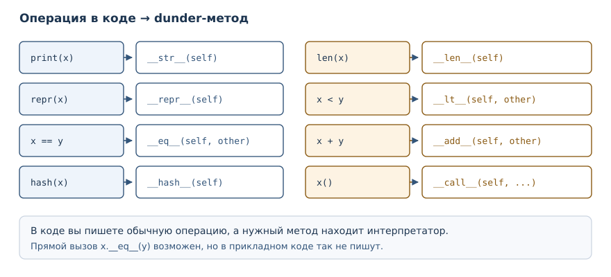
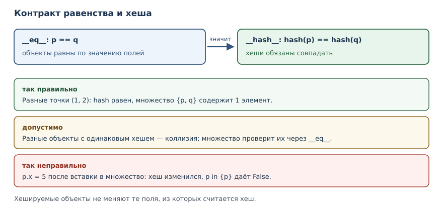

Модель данных: dunder-методы
Как встроить свои типы в синтаксис Python: читаемое представление, равенство, хеширование, сортировка, длина и операторы.
В этой главе
Ваши классы уже умеют хранить состояние и защищать его. Но за пределами
собственных методов они ведут себя как чужие объекты: print(point) печатает
непонятный адрес, point1 == point2 сравнивает ссылки, len(basket) падает,
а sorted(points) поднимает исключение. Причина в том, что встроенные
операции языка не знают, что делать с вашим типом. В этой главе вы научитесь
описывать это поведение — через специальные методы, которые Python вызывает
сам.
28.1 Зачем это нужно
Представьте отладочный вывод. Список точек печатается как набор служебных строк с адресами памяти: по такому выводу невозможно понять, какие координаты у элементов. Ещё хуже с равенством: две точки с одинаковыми координатами считаются разными, потому что по умолчанию сравниваются ссылки. Если точки попадают в множество или становятся ключами словаря, дубликаты не объединяются, а поиск идёт не по значению.
Модель данных Python решает все эти задачи одинаково: для каждой встроенной
операции есть специальный метод, который интерпретатор вызывает у вашего
объекта. print обращается к методу представления, == — к методу
равенства, len — к методу длины, + — к методу сложения. Реализовав их,
вы получаете класс, который ведёт себя как встроенный тип: его можно
сравнивать, сортировать, складывать, печатать и хранить в множествах.
28.2 Что вы сможете после этой главы
К концу главы ваши классы будут вести себя как встроенные типы в самых частых операциях. Конкретно — вот чему вы научитесь:
- объяснять, зачем интерпретатор вызывает специальные методы сам;
- задавать читаемое и однозначное представление объекта;
- реализовывать равенство по значению и согласовывать его с хешированием;
- упорядочивать объекты и сортировать их встроенной сортировкой;
- определять длину, истинность, операторы и вызываемость объекта;
- замечать ошибки, которые ломают работу множеств и словарей.
28.3 Что такое dunder-метод
dunder-метод (специальный метод) — метод с двумя подчёркиваниями по краям, который Python вызывает для встроенных операций.
Название происходит от английского «double underscore»: __repr__,
__eq__, __len__. Вы уже встречали два таких метода — __init__ и
__repr__ в выводе ошибок. Их особенность в том, что вызывающий код редко
пишет их имя напрямую. Вместо этого он использует обычную запись языка, а
интерпретатор сам находит нужный метод.
| Запись в коде | Что вызывает Python | Смысл |
|---|---|---|
print(x) |
x.__str__() |
читаемый текст |
repr(x) |
x.__repr__() |
однозначное представление |
x == y |
x.__eq__(y) |
равенство |
hash(x) |
x.__hash__() |
хеш |
len(x) |
x.__len__() |
длина |
x < y |
x.__lt__(y) |
порядок |
x + y |
x.__add__(y) |
сложение |
x() |
x.__call__() |
вызов объекта |
Правило простое: имя метода — часть контракта языка. Придумывать свои методы с двумя подчёркиваниями не нужно: они зарезервированы моделью данных, и интерпретатор может искать их в неожиданных местах. Для собственных операций используйте обычные имена.

Почему методы вызывает интерпретатор
Специальные методы отличаются от обычных ещё и способом поиска. Когда вы
пишете x + y, Python ищет __add__ в типе x, а не в самом объекте.
Обычный атрибут можно положить в экземпляр, и он найдётся; специальный —
нет.
class Sneaky:
pass
s = Sneaky()
s.__len__ = lambda: 5
try:
print(len(s))
except TypeError as error:
print("TypeError:", error)
TypeError: object of type 'Sneaky' has no len()
Метод __len__ присвоен экземпляру, но len его не видит: поиск идёт по
типу. Такое правило защищает язык от неожиданностей — иначе любой код мог бы
подменить поведение встроенных операций у отдельного объекта. Практический
вывод простой: специальные методы объявляют в теле класса, а не добавляют
объекту во время работы.
28.4 repr: представление для разработчика
__repr__ — метод, возвращающий однозначное техническое представление
объекта для отладки.
По умолчанию объект печатается как нечто вроде <Point object at 0x...>.
Проверить это можно, не выводя адрес:
class Empty:
pass
e = Empty()
print(e.__repr__().startswith("<"))
True
Стандартное представление начинается с угловой скобки и содержит адрес
памяти. Адрес меняется от запуска к запуску, поэтому такой вывод бесполезен
и в книге, и в тестах. Свой __repr__ решает задачу:
class Point:
def __init__(self, x, y):
self.x = x
self.y = y
def __repr__(self):
return f"Point(x={self.x}, y={self.y})"
p = Point(3, 4)
print(p)
print(repr(p))
print([p, Point(0, 0)])
Point(x=3, y=4)
Point(x=3, y=4)
[Point(x=3, y=4), Point(x=0, y=0)]
Три вывода показывают важное свойство: представление работает и для
одиночного объекта, и внутри коллекции. Хороший __repr__ выглядит как код,
который создаёт такой же объект. Если скопировать Point(x=3, y=4), получится
равная точка — это и означает «однозначное представление».
Если объявить ещё и __str__, он станет читаемой формой для print:
class Money:
def __init__(self, amount):
self.amount = amount
def __repr__(self):
return f"Money({self.amount})"
def __str__(self):
return f"{self.amount} ₽"
print(Money(100))
print(repr(Money(100)))
print([Money(100)])
100 ₽
Money(100)
[Money(100)]
print использует __str__, а repr и список — __repr__. Если __str__
не объявлен, print берёт __repr__: именно поэтому достаточно одного
метода в большинстве классов. Правило выбора: __repr__ — для разработчика
и отладки, он должен быть однозначным; __str__ — для пользователя, он
может быть красивым.
28.5 eq: равенство по значению
__eq__ — метод, определяющий равенство объектов при сравнении через
==.
По умолчанию == сравнивает ссылки: два разных объекта не равны, даже если
их поля совпадают. Реализация по значению выглядит так:
class Point:
def __init__(self, x, y):
self.x = x
self.y = y
def __eq__(self, other):
if not isinstance(other, Point):
return NotImplemented
return (self.x, self.y) == (other.x, other.y)
print(Point(1, 2) == Point(1, 2))
print(Point(1, 2) == Point(3, 4))
print(Point(1, 2) == "точка")
print(Point(1, 2) != Point(3, 4))
True
False
False
True
Здесь важны три решения. Первое: сравниваются поля, а не ссылки. Второе:
для объекта чужого типа возвращается NotImplemented — специальное значение,
которое говорит «я не умею сравнивать с этим». Python тогда попробует
отражённый метод другой стороны, а если и тот откажется, вернёт False для
равенства. Третье: != объявлять не нужно, Python выводит его из __eq__.
Сравнение Point(1, 2) == "точка" не поднимает исключение и не падает:
правило NotImplemented превращает его в False. Если бы вместо этого
вернулось False напрямую, != тоже работал бы, но отражённое сравнение с
другим классом, который умеет сравниваться с точкой, стало бы невозможно.
28.6 hash: объекты в множествах и словарях
__hash__ — метод, вычисляющий хеш объекта; он должен согласовываться с
__eq__.
Хеш — это число, по которому объект раскладывается в множестве или словаре. Требование к паре методов строгое: если два объекта равны, их хеши обязаны быть равны. Иначе поиск в множестве не найдёт объект, который там лежит.
class Point:
def __init__(self, x, y):
self.x = x
self.y = y
def __eq__(self, other):
return isinstance(other, Point) and (self.x, self.y) == (other.x, other.y)
def __hash__(self):
return hash((self.x, self.y))
p1 = Point(1, 2)
p2 = Point(1, 2)
print(p1 == p2)
print(hash(p1) == hash(p2))
print(len({p1, p2}))
True
True
1
Две равные точки дали одинаковый хеш, поэтому множество схлопнуло их в один
элемент. Если объявить __eq__ и забыть про __hash__, объект станет
нехешируемым: Python специально запрещает использовать его в множествах и
как ключ словаря.
class Point:
def __init__(self, x, y):
self.x = x
self.y = y
def __eq__(self, other):
return (self.x, self.y) == (other.x, other.y)
p = Point(1, 2)
print(hash(p))
TypeError: unhashable type: 'Point'
Это защита от логической ошибки: если равенство зависит от полей, а хеш
остался от стандартного поведения, множество будет считать равные объекты
разными. Решение — либо объявить __hash__, либо осознанно оставить тип
нехешируемым.

Второе ограничение связано с изменяемостью. Хеш вычисляется в момент добавления, и если после этого изменить поля, объект «переедет» в другую корзину, а множество продолжит искать его по старому хешу:
class Point:
def __init__(self, x, y):
self.x = x
self.y = y
def __eq__(self, other):
return (self.x, self.y) == (other.x, other.y)
def __hash__(self):
return hash((self.x, self.y))
p = Point(1, 2)
s = {p}
p.x = 5
print(p in s)
False
Объект лежит в множестве, но найти его нельзя: хеш изменился. Отсюда правило: хешируемые объекты делают неизменяемыми по тем полям, которые участвуют в хеше.
28.7 Богатые сравнения
Богатые сравнения — набор dunder-методов __lt__, __le__, __gt__,
__ge__ для упорядочивания объектов.
Часто достаточно объявить __lt__: > для своего типа заработает через
отражённое сравнение (a > b вызывает b.__lt__(a)), а sorted пользуется
именно <. А вот <= и >= по умолчанию не выводятся — их нужно объявлять
явно, если они нужны.
class Version:
def __init__(self, major, minor):
self.major = major
self.minor = minor
def __repr__(self):
return f"Version({self.major}, {self.minor})"
def __lt__(self, other):
return (self.major, self.minor) < (other.major, other.minor)
versions = [Version(1, 10), Version(1, 2), Version(2, 0)]
print(sorted(versions))
print(Version(1, 2) < Version(1, 10))
[Version(1, 2), Version(1, 10), Version(2, 0)]
True
Сортировка не требует __gt__ или __le__. Но если нужно полное
упорядочивание — например, чтобы работали все четыре операции, — объявляют
все четыре метода. Список их соответствий: __lt__ для <, __le__ для
<=, __gt__ для >, __ge__ для >=.
Для полного набора сравнений удобно реализовать __eq__ и __lt__, а
остальные получить через functools.total_ordering из стандартной
библиотеки. Этот декоратор достраивает недостающие методы, если они
согласованы.
28.8 len и истинность
__len__ — метод, возвращающий длину объекта для функции len и
проверки истинности.
class Basket:
def __init__(self, items):
self.items = list(items)
def __len__(self):
return len(self.items)
b = Basket(["яблоко", "груша"])
print(len(b))
print(bool(b))
print(bool(Basket([])))
2
True
False
len вызывает __len__ напрямую. Проверка истинности в if тоже
обращается к __len__: пустая корзина даёт False, непустая — True.
Метод обязан вернуть неотрицательное целое число: отрицательное значение Python
отвергает с ValueError, а нецелое — с TypeError.
28.9 Перегрузка операторов
Перегрузка операторов — определение поведения операторов для своего типа
через dunder-методы (__add__, __lt__ и другие).
class Vector:
def __init__(self, x, y):
self.x = x
self.y = y
def __repr__(self):
return f"Vector({self.x}, {self.y})"
def __add__(self, other):
return Vector(self.x + other.x, self.y + other.y)
print(Vector(1, 2) + Vector(3, 4))
Vector(4, 6)
__add__ получает второй операнд и возвращает новый объект. Три правила
делают перегрузку безопасной. Первое: не изменяйте self, создавайте новое
значение — так работают числа и строки, и читатель ожидает того же.
Второе: для чужого типа возвращайте NotImplemented, а не пытайтесь угадать.
Третье: реализуйте оператор только там, где его смысл очевиден. Сложение
векторов понятно, а Vector * Vector может означать скалярное произведение
или покомпонентное умножение — лучше метод с именем, чем неоднозначный
оператор.
28.10 Вызываемые объекты
Вызываемый объект — объект, который можно вызвать как функцию благодаря
методу __call__.
class Multiplier:
def __init__(self, factor):
self.factor = factor
def __call__(self, value):
return value * self.factor
double = Multiplier(2)
print(double(5))
print(callable(double))
10
True
Объект хранит состояние (factor) и при этом вызывается как функция.
callable проверяет, есть ли у объекта __call__. Такой приём удобен, когда
у операции есть настройки: вместо функции с замыканием можно создать объект
с методами и настройками, который при этом остаётся вызываемым.
28.11 Сколько методов реализовывать
Специальных методов много, и реализовывать их все не нужно. Набор зависит от того, какую роль играет класс.
| Роль класса | Обязательные методы | Обычно добавляют |
|---|---|---|
| значение с данными | __repr__ |
__eq__, __hash__ |
| упорядоченное значение | __repr__, __eq__ |
__lt__ и остальные сравнения |
| контейнер | __repr__, __len__ |
__iter__, __getitem__ |
| число или вектор | __repr__ |
__add__, __eq__ |
| операция с настройками | __repr__ |
__call__ |
__repr__ стоит реализовать почти всегда: это самый дешёвый способ сделать
класс удобным для отладки и логов. __eq__ нужен, когда у объекта есть
понятие «такое же значение»; если объект представляет уникальную сущность
(например, соединение с базой), равенство по ссылке может быть правильным
решением. __hash__ добавляют только к неизменяемым значениям, которые
действительно будут храниться в множествах или словарях.
Обратное правило тоже важно: не реализуйте метод «на всякий случай».
Например, __add__ у класса, где сложение не имеет очевидного смысла, хуже
отсутствия метода: читатель потратит время на выяснение, что означает эта
операция. Специальный метод — часть публичного контракта, и он должен быть
понятен без документации.
И ещё одно ограничение: модель данных не терпит противоречий. Если __eq__
сравнивает поля, а __lt__ — только одно из них, сортировка и равенство
начнут расходиться. Проверяйте согласованность на примерах: равные объекты
должны вести себя одинаково во всех операциях.
28.12 Типичные ошибки
- Оставлять стандартный
__repr__. Адрес памяти в выводе бесполезен и делает примеры недетерминированными; объявите представление явно. - Сравнивать объекты через
is.isпроверяет тождество ссылок. Равенство по значению задаётся__eq__, и для этого нужен==. - Объявить
__eq__и забыть__hash__. Тип станет нехешируемым, и множество или словарь с ним не сработают. - Сделать
__eq__и__hash__несогласованными. Если равные объекты дают разные хеши, поиск в множестве ломается. - Изменять поля хешируемого объекта. Объект останется в множестве, но перестанет находиться.
- Возвращать из
__repr__не строку. Даже число вызоветTypeError, потому что представление обязано быть текстом. - Менять
selfв операторе.a + bне должен незаметно изменятьa: читатель ожидает новое значение.
28.13 Упражнения
1. Прогноз вывода
Определите, что напечатает программа, и объясните, какой метод вызывается в каждой строке:
class Tag:
def __init__(self, name):
self.name = name
def __repr__(self):
return f"Tag({self.name!r})"
print(Tag("python"))
print(repr(Tag("python")))
print([Tag("a"), Tag("b")])
2. Представление для денег
Объявите класс Money с суммой и валютой. __repr__ должен возвращать
строку вида Money(100, 'руб.'), а __str__ — 100 руб.. Проверьте оба
представления и печать списка.
3. Равенство точек
Объявите класс Point с координатами и методом __eq__, сравнивающим
значения полей. Проверьте равенство двух точек с одинаковыми координатами,
неравенство разных и сравнение с объектом другого типа.
4. Согласование равенства и хеша
Добавьте в Point из предыдущего упражнения __hash__. Убедитесь, что две
равные точки дают одинаковый хеш и что множество из них содержит один
элемент. Затем покажите, что без __hash__ тот же класс нельзя хешировать.
5. Сортировка версий
Объявите класс Version с номерами major и minor и методом __lt__,
сравнивающим версии по паре чисел. Отсортируйте список 1.10, 1.2, 2.0
и объясните, почему 1.2 идёт раньше 1.10.
6. Длина и истинность
Объявите класс Queue с внутренним списком и методом __len__. Проверьте
len(queue), истинность непустой и пустой очереди. Объясните, почему
проверка if queue: работает без отдельного метода.
7. Сложение векторов
Объявите класс Vector с __add__, возвращающим новый вектор, и __repr__.
Проверьте сложение двух векторов и убедитесь, что исходные объекты не
изменились.
8. Вызываемый фильтр
Объявите класс StartsWith с префиксом в конструкторе и методом __call__,
который принимает строку и возвращает логическое значение. Проверьте на
списке слов, отобрав подходящие, и объясните, почему объект можно передать
туда, где ожидается функция.
9. Исправление нехешируемого класса
Класс хранит равенство по полям, но его нельзя положить в множество:
class Point:
def __init__(self, x, y):
self.x = x
self.y = y
def __eq__(self, other):
return (self.x, self.y) == (other.x, other.y)
p = Point(1, 2)
print(hash(p))
Объясните ошибку и исправьте класс, не теряя равенства по значению.
10. Мини-проект: карточка товара
Объявите класс Product с названием и ценой. Реализуйте __repr__,
__eq__ и __hash__ по названию. Создайте множество товаров с повторяющимся
названием, словарь, где товар — ключ, и отсортируйте список товаров по цене
через key. Объясните, какие методы понадобились в каждом случае.
28.14 Проверка понимания
- Почему
__repr__должен быть однозначным, а__str__— читаемым? - Что значит вернуть
NotImplementedиз__eq__? Чем это лучшеFalse? - Почему после объявления
__eq__тип становится нехешируемым, если не объявить__hash__? - Какое требование связывает
__eq__и__hash__? - Почему опасно изменять поля объекта, лежащего в множестве?
- Зачем
sortedдостаточно одного__lt__, а для всех сравнений нужны четыре метода?
28.15 Что дальше
Модель данных делает ваши типы полноправными участниками языка. Следующая
глава сокращает ручную работу: в
«Dataclasses, протоколы и абстрактные классы»
вы увидите, как получить __init__, __repr__ и сравнение из объявления
полей, а также как описывать контракты без жёсткой иерархии.